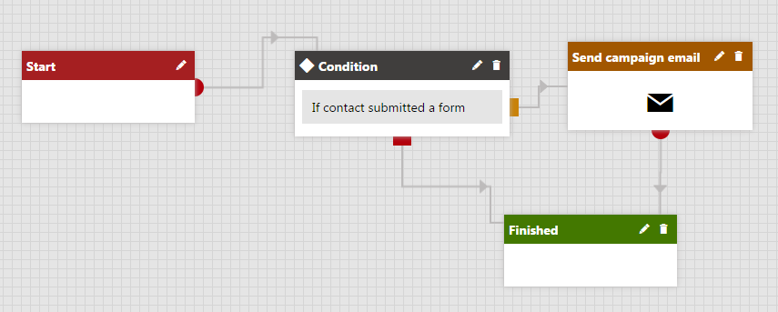

Defining automatic decisions in processes
Marketing automation allows you to split processes into multiple branches. You can define conditional steps, which automatically determine how contacts continue through the process.
The system evaluates automatic decision steps based on dynamic conditions. For example, you can create conditions that check the values of the given contact's attributes, or their previous activity on a website.
Adding basic conditions
Condition steps split the process into two branches – one if the condition is true, the other when false. The step automatically moves contacts forward to the next step based on the result of the condition.
To add a condition step:
Place the Condition step onto the grid from the designer toolbar.
Edit the step by clicking the pencil icon next to its name or by double-clicking the step box.
The Process step properties dialog opens.
Edit the condition in the Condition field.
If you write the macro condition manually, your expression must return either true or false.
(Optional) Type a text description of the condition into the Designer label field.
Click Save and close the dialog.
Integrate the condition into the flow of the process by connecting a preceding step.
Connect both source points of the condition to other steps in the process.
For example, the process shown below uses a condition to send a campaign email only to contacts who fulfill a specific condition (have submitted a certain form). If the contact in the process does not meet the condition, the process moves directly to the Finished step.

Condition step that moves the process to the Send newsletter issue step if true
Kentico EMS required
Features described on this page require the Kentico EMS license.
Adding Multi-choice steps
Multi-choice steps can split the process into any number of branches. You need to define a set of cases for the step, each with its own condition. When a contact reaches the step in the process, the system automatically evaluates the conditions of the cases:
If the condition is fulfilled for exactly one case, the process automatically moves the contact to the step connected to the corresponding source point.
If multiple conditions are fulfilled, designated users need to manually choose the next step for the given contact.
If none of the conditions are fulfilled, the process continues through the else branch.
To add Multi-choice steps to your process:
Place the Multi-choice step onto the grid from the designer toolbar.
Integrate the step into the flow of the process by connecting a preceding step.
Define cases for the step.
Connect the else source point (red) to another step.
Connect the source points of all cases to other steps.
Adding First win steps
First win steps can split the process into any number of branches. You need to define a set of cases for the step, each with its own condition. When a contact reaches the step in the process, the system evaluates the cases according to their order. If the step finds a matching condition, the contact moves forward to the step connected to the corresponding case (the remaining cases are not evaluated). If none of the conditions are fulfilled, the process continues through the else branch.
To add First win steps to your process:
Place the First win step onto the grid from the designer toolbar.
Integrate the step into the flow of the process by connecting a preceding step.
Define cases for the step.
Connect the else source point (red) to another step.
Connect the source points of all cases to other steps.
Defining cases for decision steps with multiple branches
Cases represent individual branches of Multi-choice and First win steps. To set up cases for a step:
Click Add new case (
 ) to create the required number of branches.
) to create the required number of branches.Click Edit case properties (pencil icon) for each case.
The Process step properties dialog opens.
Specify the case's condition in the Condition field.
(Optional) Fill in the User action text and User action tooltip for the case.
Users can see these text values when manually managing the flow of the process for contacts in the given step.
Open the Security tab and choose which users or roles are allowed to manually move contacts through the given case.
By default, cases inherit the security settings of the step.
Click Save and close the Process step properties dialog.
You can see the cases listed inside the step. Each case provides a separate source point for connecting the decision step to the appropriate branch of the process.